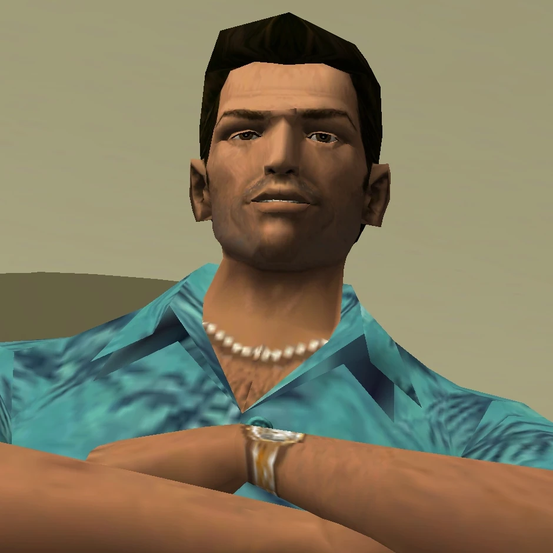

no photoTommy Vercetti
Released mobster, ambitious ★★★★☆A mobster fresh out of a long prison stint, sent to Vice City to run a drug deal that goes wrong on arrival — and who spends the rest of his time there turning that betrayal into an empire of his own.